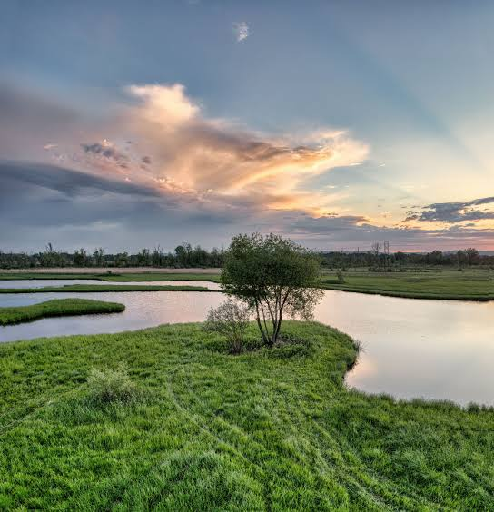

The land
between rains.
Explore the landscapes, seasonal rainfall and water challenges shaping communities in Myanmar's Central Dry Zone.
Not a desert.
Not always green.
Myanmar's Central Dry Zone lies in the interior of the country. It includes parts of Mandalay, Magway and lower Sagaing Regions.
The area receives less rainfall than many other parts of Myanmar. Although the region has a rainy season, long dry periods and irregular rainfall can create difficulties for agriculture and water supplies.
SOURCE: MYANMAR INFORMATION MANAGEMENT UNITDRY ZONE AREAS
DRY ZONE DEFINITION
RAINFALL SEASON
Township coverage is based on MIMU's regional definition. Rainfall and water access vary between locations and years.
A closer look at
the Dry Zone.
Explore nine reference towns across three regions. Select a marker to view its geographical profile, then open the seasonal rainfall chart.
Check your internet connection. You can still browse towns using the location selector.
The Dry Zone is a climatic area, not an administrative region. These markers show reference towns rather than exact Dry Zone boundaries. Region colors identify locations only and do not indicate drought severity. Dry Zone background: MIMU
Water follows
a seasonal rhythm.
Central Myanmar has a generally wetter monsoon season from May to October and a drier period from November to April. Conditions vary between years and locations.
Select a month to explore the general seasonal pattern.
When water is limited,
everything is connected.

WATER SHAPES DAILY LIFEAgriculture
Limited rainfall and soil moisture can reduce crop growth and harvests.
Household Water
Families need reliable access to safe water for drinking, cooking and hygiene.
Livelihoods
Water shortages can increase costs and make agricultural income less reliable.
The Environment
Extended dry conditions can place pressure on soils, plants and ecosystems.
Water challenges are real.
Preparation matters.
No single solution can prevent drought, but practical steps can help communities use water carefully and prepare for shortages.